7. Session View
In Live’s Arrangement View, as in all traditional sequencing programs, everything happens along a fixed song timeline. For a number of applications, this is a limiting paradigm:
- When playing live, or when DJing, the order of pieces, the length of each piece and the order of parts within each piece is generally not known in advance.
- In the theatre, sound has to react to what happens on stage.
- When working along with a piece of music or a film score, it can be more efficient and inspirational to start with an improvisation, which is later refined into the final product.
This is exactly what Live’s unique Session View is for.
7.1 Session View Clips
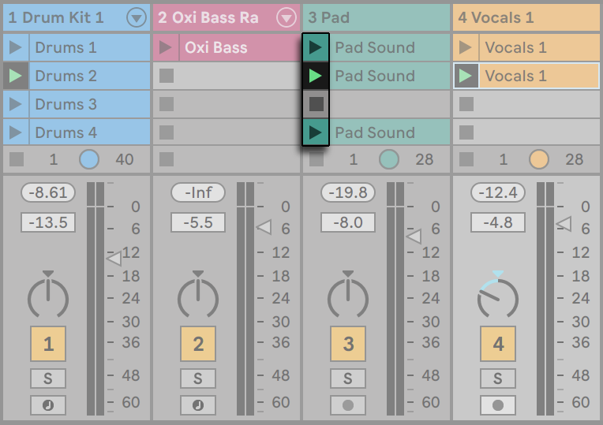
- Each clip in the Session View has a triangular button at the left edge. Click the button with the mouse to “launch“ clip playback at any time, or pre-select a clip by clicking on its name, and launch it using the computer’s Enter key. You can then move on to the neighboring clips using the arrow keys. Please refer to the manual section on clip launch settings for details on how to customize this behavior.
- Click on a square Clip Stop button to stop a running clip, either in one of the track’s slots, or in the Track Status field below the Session grid.
Pressing the 0 key while a Session View clip(s) is selected will deactivate that clip(s).
Clips can be controlled remotely with the computer keyboard or a MIDI controller. They can even be mapped to MIDI note ranges so that they play chromatically.
Clips can be played at any time and in any order. The layout of clips does not predetermine their order; the Session grid offers random access to the clips it contains.
Notice that, even if you stop playback for a Session View clip, the Play button in the Control Bar will remain highlighted, and the Arrangement Position fields will continue running. These fields keep a continuous flow of musical time going, so that you can always know your position in song time during a live performance or while recording into the Arrangement, regardless of what your individual Session clips are doing.
You can always return the Arrangement Position fields to 1.1.1 and stop playback for the entire Live Set by pressing the Control Bar’s Stop button twice.
Clips can be renamed using the Rename command in the Edit menu or the clip’s context menu. You can rename several selected clips at once by executing the Rename command. You can also enter your own info text for a clip via the Edit Info Text command in the Edit menu or in the clip’s context menu. The context menu also contains a color palette where you can choose a custom clip color.
Clips can be reordered by drag-and-drop. Multiple adjacent or nonadjacent clips can be selected at once by Shift-clicking or Ctrl-clicking, respectively.
Slots in Group Tracks show a shaded area to indicate that at least one of the contained tracks contains a clip in that scene. The color of the shading is the color of the left-most clip in the group. These group slots also contain launch buttons which will launch all of the respective clips. Group slots which have no corresponding clips contain stop buttons. Clicking in any group slot selects all of the clips it refers to.
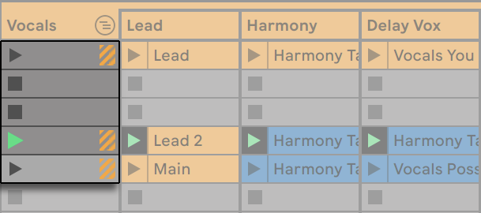
7.2 Tracks and Scenes
Each vertical column, or track, can play only one clip at a time. It therefore makes sense to put a set of clips that are supposed to be played alternatively in the same columns: parts of a song, variations of a drum loop, etc.
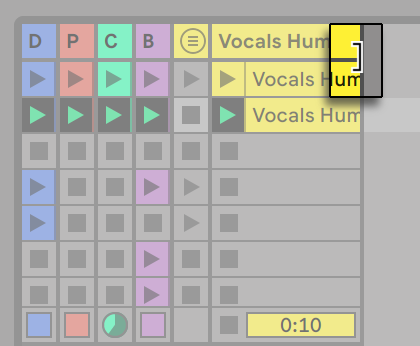
For convenient access to more clips at once, you can resize Session View tracks by clicking and dragging at the edges of their title bars. Tracks can be narrowed this way so that only Clip Launch buttons and essential track controls are visible. Note that you can resize all Session View tracks at once by holding Alt (Win) / Option (Mac) while resizing a single track.
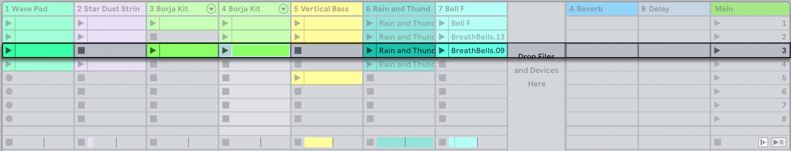
Note that pressing the 0 key while a Session View track header is selected will deactivate that track.
The horizontal rows are called scenes. The Scene Launch buttons are located in the rightmost column, which represents the Main track. To launch every clip in a row simultaneously, click on the associated Scene Launch button. This can be very useful in organizing the live performance of a song with multiple parts. Note that you can cancel the launch of any previously triggered scene by clicking the Cancel Scene Launch entry in the Main track’s context menu.
The scene below a launched scene will automatically be selected as the next to be launched unless the Select Next Scene on Launch option in the Launch Settings is set to “Off.“ This allows you to trigger scenes from top to bottom without having to select them first. Computer keys or a MIDI controller can be used to launch scenes and scroll between them.
Scenes can be renamed using the Rename command in the Edit menu or the scene’s context menu. One can quickly rename several scenes by executing the Rename command and using the computer’s Tab key to move from one scene to the next. You can also enter your own info text for a scene via the Edit Info Text command in the Edit menu or in the scene’s context menu. The context menu also contains a color palette where you can choose a custom scene color.
Scenes can be reordered by drag-and-drop. Multiple adjacent or nonadjacent scenes can be selected at once by Shift-clicking or Ctrl-clicking, respectively. If you drag a selection of nonadjacent scenes, they will be collapsed together when dropped. To move nonadjacent scenes without collapsing, use Ctrl + the up or down arrow keys instead of the mouse.
Each scene has its own number, which is displayed in a column at the right-hand side. Scene numbers are determined by their position; when a scene is moved, its number changes according to the scene’s new position.
7.2.1 Editing Scene Tempo and Time Signature Values
Dragging the left edge of the Main track’s title header reveals the Scene Tempo and Scene Time Signature controls, which allow you to assign a tempo and/or time signature to a selected scene. These controls are hidden by default. The project will automatically adjust to these parameters when the scene is launched. To change a scene’s tempo or time signature values:
- Click and drag up or down in any of these fields.
- Click and type a number, then hit Enter.
Note that you can also edit tempo and time signature values for scenes in the Scene View.
Any tempo can be used, as long as it is within the range allowed by Live’s Tempo control (20-999 BPM). Any time signature can be used, provided it has a numerator between 1 and 99 and a denominator with a beat value of 1, 2, 4, 8 or 16.
When enabled, the Scene Tempo and Scene Time Signature controls can be disabled and reset via the Return to Default context menu entry, or pressing the Delete key. You can also disable the controls by double-clicking them.
You can use the left and right arrow keys to quickly navigate from a selected clip slot or scene to the Scene Tempo and Scene Time Signature controls. When editing a scene name, or a tempo or time signature value in the Main track using the keyboard, the Tab or ShiftTab keyboard shortcut navigates to the next or previous control, to allow editing these controls quickly. The navigation moves to the next or previous scene when reaching the last or first control in a scene.
Note: When a Scene Tempo/Time Signature control is selected in the Main track, pressing Enter once will select the respective scene. Pressing Enter again launches the selected scene.
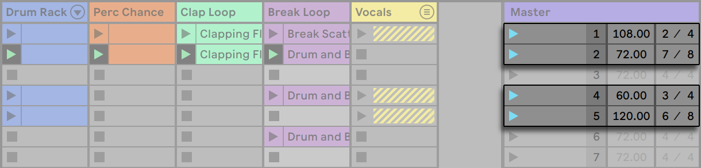
Scenes with assigned tempo and/or time signature changes will have a colored Scene Launch button.
Note: Sets that were created in older Live versions than Live 11, with tempo and/or time signature values specified by scene names, will have their values carried over to the Scene Tempo and/or Time Signature controls. When opening these Sets in newer versions of Live, the Main track’s width is adjusted so that the Scene Tempo and Scene Time Signature controls are visible.
7.2.2 Scene View
The Scene View is where scene properties can be set and adjusted.
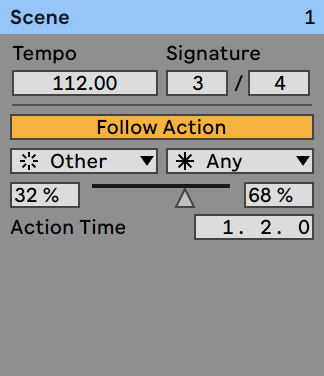
Selecting one or multiple scenes, clicking a Scene Tempo or Scene Time Signature control, or clicking the Main track title bar opens the Scene View.
In the upper section of the Scene View, the Tempo and Signature sliders allow you to edit tempo and time signature values for the selected scene(s). More information about these controls is available in the Editing Scene Tempo and Time Signature Values section of this chapter.
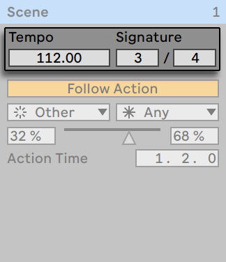
In the lower section of the Scene View, controls allow you to edit Follow Actions for the selected scene(s).
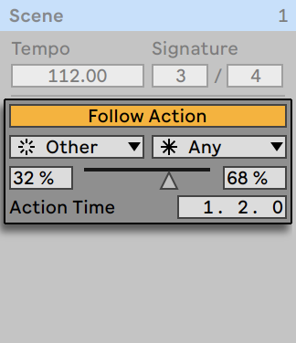
When a single scene is selected, the Scene View’s title bar displays the name and number (and color, if assigned) of that scene. Note that when multiple scenes are selected, the Scene View’s title bar indicates the number of selected scenes instead.
In the context menu of the Scene View’s title bar, two options allow you to rename a scene, and also choose a custom scene color from the color palette. Note that this also applies when multiple scenes are selected.
7.3 The Track Status Fields
You can tell a track’s status by looking at the Track Status field just above the active track’s mixer controls:
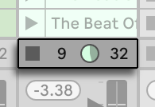
The pie-chart icon in a clip track represents a looping Session clip. The number to the right of the circle is the loop length in beats, and the number at the left represents how many times the loop has been played since its launch. A pie-chart without numbers appears in the Track Status field for a Group Track if at least one clip in a contained track is currently playing.
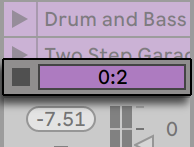
The progress-bar icon represents a one-shot (non-looping) Session clip. The value displays the remaining play time in minutes:seconds.
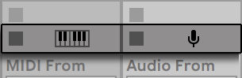
A microphone icon appears in an audio track that is set to monitor its input. A keyboard icon appears in a MIDI track under these same circumstances.
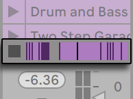
If the track is playing clips from the Arrangement, a miniature display representing the Arrangement clips being played appears.
7.4 Setting Up the Session View Grid
Clips arrive in the Session View by being imported from the browser or through recording.
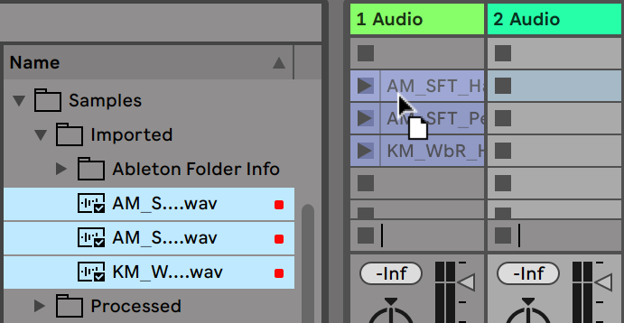
If you are dragging multiple clips into your Set, Live defaults to arranging them in one track; vertically in the Session View or horizontally in the Arrangement View. Hold down Ctrl (Win) / Cmd (Mac) prior to dropping them so as to lay the clips out in multiple tracks instead. This works for raw audio or MIDI files but not for Live Clips because they can contain their own embedded devices.
Clips can be moved around the Session grid by drag-and-drop. To move several clips at once, select them by using the Shift or Ctrl (Win) / Cmd (Mac) modifier before dragging. You can also click into an empty slot and “rubber-band“ select from there.
7.4.1 Select on Launch
By default, clicking a Session View clip’s Launch button also selects the clip, since you will typically want the Clip View to show the newly launched clip. However, some power-users don’t want the current focus (e.g., a return track’s devices) to disappear just because a clip has been launched, especially when starting a clip in order to try it with the return track device settings. Turn off the Select on Launch option from the Launch Settings if you prefer the view to remain as is when you launch clips or scenes.
7.4.2 Removing Clip Stop Buttons
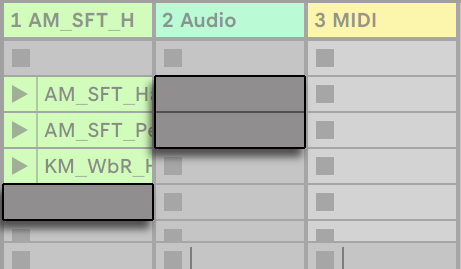
You can add and remove Clip Stop buttons from the grid using the Edit menu’s Add/Remove Stop Button command. This is useful for pre-configuring the scene launch behavior: If, for instance, you don’t want scene 3 to affect track 4, remove the scene 3/track 4 Stop button.
7.4.3 Editing Scenes
In addition to the standard Edit menu commands such as cut, copy, paste and duplicate, there are two useful commands in the Create menu that apply specifically to scenes:
- Insert Scene inserts an empty scene below the current selection.
- Capture and Insert Scene inserts a new scene below the current selection, places copies of the clips that are currently running in the new scene and launches the new scene immediately with no audible interruption. This command is very helpful when developing materials in the Session View. You can capture an interesting moment as a new scene and move on, changing clip properties and trying clip combinations.
7.5 Recording Sessions into the Arrangement
Your Session View playing can be recorded into the Arrangement, allowing for an improvisational approach to composing songs and scores.
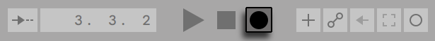
When the Arrangement Record button is on, Live logs all of your actions into the Arrangement:
- The clips launched;
- Changes of those clips’ properties;
- Changes of the mixer and the devices’ controls, also known as automation;
- Tempos and time signature changes, if they are included in the names of launched scenes.
To finish recording, press the Arrangement Record button again, or stop playback.
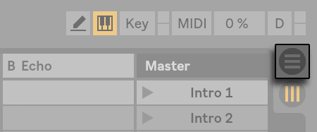
To view the results of your recording, bring up the Arrangement View. As you can see, Live has copied the clips you launched during recording into the Arrangement, in the appropriate tracks and the correct song positions. Notice that your recording has not created new audio data, only clips.
The Session clips and the Arrangement clips in one track are mutually exclusive: Only one can play at a time. When a Session clip is launched, Live stops playing back that track’s Arrangement in favor of the Session clip. Clicking a Clip Stop button causes the Arrangement playback to stop, which produces silence.
Arrangement playback does not resume until you explicitly tell Live to resume by clicking the Back to Arrangement button, which appears in the Arrangement View and lights up to remind you that what you hear differs from the Arrangement.
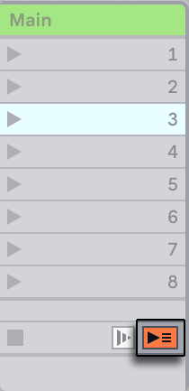
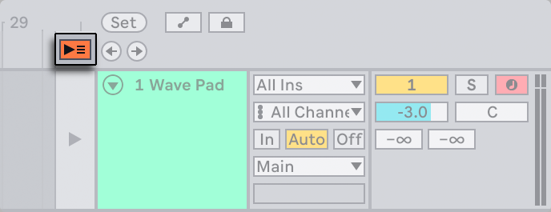
To disable all Arrangement clips simultaneously, click on the Stop All Clips button in the Main track Status field. The clips in the Arrangement and in the Session View exist independently from one another, which makes it easy to improvise into the Arrangement over and over again until it’s right.
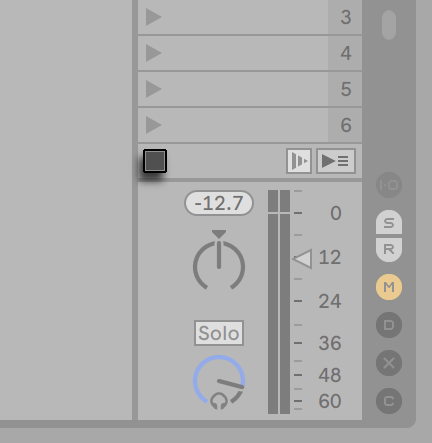
Furthermore, you can move clips not only within the Session grid, but also from the Session View to the Arrangement and vice versa by using Copy and Paste, by dragging clips over the or selectors, or by simply dragging clips between the two windows if you’ve enabled the Second Window option via CtrlShiftW (Win) / CmdShiftW (Mac) or in the View menu.
When pasting material from the Arrangement into the Session View, Live attempts to preserve the temporal structure of the clips by laying them out in a matching top-to-bottom order. Moving through the scenes from the top down, you can reconstruct the original arrangement. This is useful for taking a composed piece of music back to the improvisational stage.
Another way to move material from the Arrangement to the Session is with the Arrangement View’s Consolidate Time to New Scene command, which is available from the Create menu or in the context menu of an Arrangement selection. This command consolidates the material within the selected time range to one new clip per track. The new clips are placed into a new Session View scene below the previously selected scene. Note that, as with the Arrangement’s Consolidate command, this command creates a new sample for every audio track in the selection that contained at least one clip.